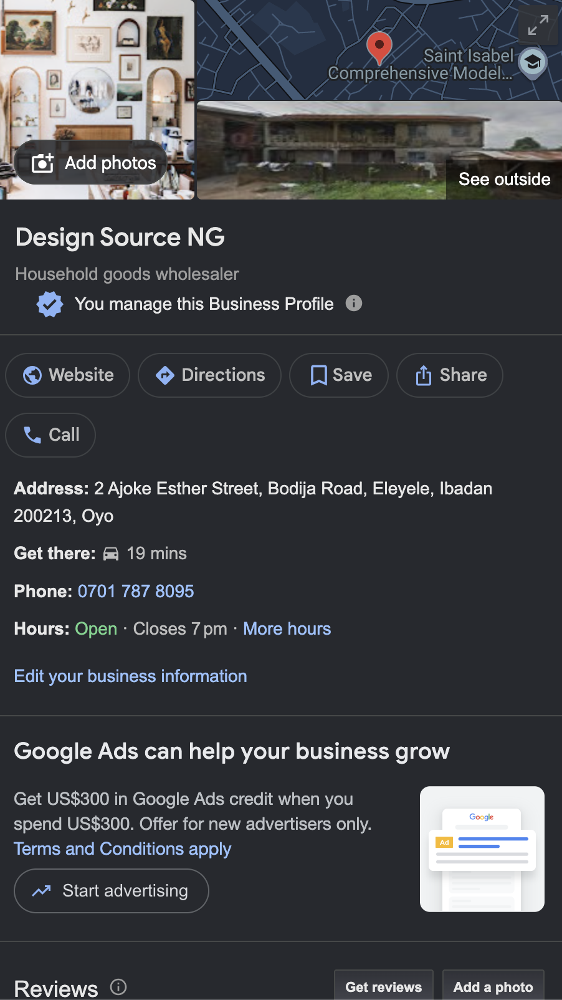

How to Create a Google Business Profile
A Google Business Profile helps businesses appear on Google Search and Google Maps. It allows customers to find important information about a business, such as its location, opening hours, phone number, website, and services.
Materials Needed
- A Google account
- Your business name
- Your business address or service area
- A business phone number
- Your business website, if you have one
- Photos of your business
Steps
- Sign in to your Google account.
- Search for Google Business Profile and open the official Google Business Profile page.
- Enter your business name and choose the category that best describes your business.
- Add your business location or service area so customers can find you.
- Add your business phone number and website address.
- Complete the verification process provided by Google.
- Add important business information, including your opening hours, description, services, and photos.
- Review your information and keep your profile updated.
Helpful Tip
Keep your business information accurate and up to date. Adding clear photos and complete information can make it easier for potential customers to understand what your business offers.
